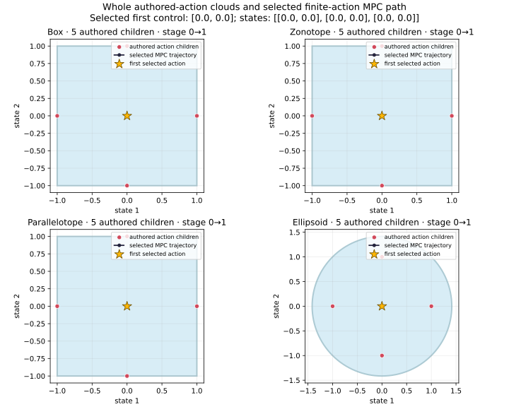

Whole authored-action clouds
Source-bound analytic two-state task, stages 0–2. Each panel shows the actual selected numerical set shape, all five recomputed authored action children, and the retained-graph MPC path. The set is a numerical outer approximation; this illustration does not claim global optimality.
